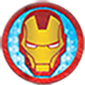
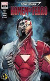
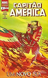
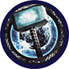
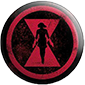
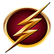

- 
- 

- 


- 


- 
Hulk
O Hulk, por vezes referido como O Incrível Hulk (The Incredible Hulk, no original em inglês), é
um personagem de quadrinhos/banda desenhada do gênero super-herói, propriedade da Marvel Comics,
editora pela qual as histórias do personagem são publicadas desde sua criação, na década de 1960.
Concebido pelo roteirista Stan Lee (1922–2018) e pelo desenhista Jack Kirby (1917–1994),
o Hulk teve sua primeira aparição junto ao público original dos Estados Unidos na revista
The Incredible Hulk n°1, lançada no mercado americano pela Marvel Comics em maio de 1962,
um título solo do personagem, garantindo-lhe o acesso ao que mais tarde seria popularmente conhecido
como Universo Marvel dos quadrinhos/banda desenhada. A partir de então, o Hulk tem aparecido, protagonizando
ou não, diversas histórias da editora, se tornando um dos mais visualmente reconhecíveis da mesma, tendo o
universo entorno do personagem se expandido continuadamente ao longo das últimas décadas.
Homem de Ferro
O Homem de Ferro (Iron Man) é um personagem dos quadrinhos publicados pela Marvel Comics.
Sua verdadeira identidade é o empresário e bilionário Tony Stark, que usa armaduras
de alta tecnologia no combate ao crime. Foi criado em 1963 pelo escritor Stan Lee,
o roteirista Larry Lieber e os desenhistas Jack Kirby e Don Heck. Stan Lee aceitou o
desafio de fazer um personagem ser odiado e depois amado pelo público, criando um dos
super-heróis mais marcantes de todos os tempos.
A primeira publicação foi em Tales of Suspense #39 (história publicada pela
primeira vez no Brasil em Heróis da TV #100). Desde então, se tornou um dos personagens
mais conhecidos da Marvel, como membro dos Vingadores nas adaptações para desenhos animados
e cinema (no qual foi interpretado por Robert Downey, Jr.).
Capitão-America
É um super-herói de histórias em quadrinhos americanos publicado pela Marvel Comics.
Criado por Joe Simon e Jack Kirby, o primeiro personagem apareceu em Captain America Comics # 1
(março de 1941) da Timely Comics, antecessora da Marvel Comics. Capitão América foi concebido
como um super-herói patriótico que lutou contra as potências do Eixo na Segunda Guerra Mundial
e foi personagem mais popular da Timely Comics durante o período da guerra.
A popularidade dos super-heróis diminuiu após a guerra e os quadrinhos Capitão América
foram interrompidos em 1950, com uma volta de curta duração em 1953. Em 1964,
o personagem foi reintroduzido como participante do Universo Marvel
Vingadores Os Vingadores (The Avengers no original em inglês) são um grupo de super-heróis de história em quadrinhos publicados nos Estados Unidos pela editora Marvel Comics. O grupo também aparece em adaptações da Marvel para cinema, desenho animado e jogos eletrônicos. Os heróis mais conhecidos são a formação original de Thor, Homem de Ferro, Homem-Formiga e a Vespa, e Hulk, além de seu primeiro recruta, o Capitão América (introduzido na quarta edição). A equipe, inspirada na Liga da Justiça da DC Comics, tem molde de um clube, inclusive com o mordomo do Homem de Ferro, Jarvis, os servindo. No Universo Marvel, a equipe tradicionalmente é a primeira a ser chamada pelo governo dos EUA quando defrontado por desafios de ordem cósmica, e tem bases em Nova York e uma ilha na costa americana.


- 


Liga Da Justiça